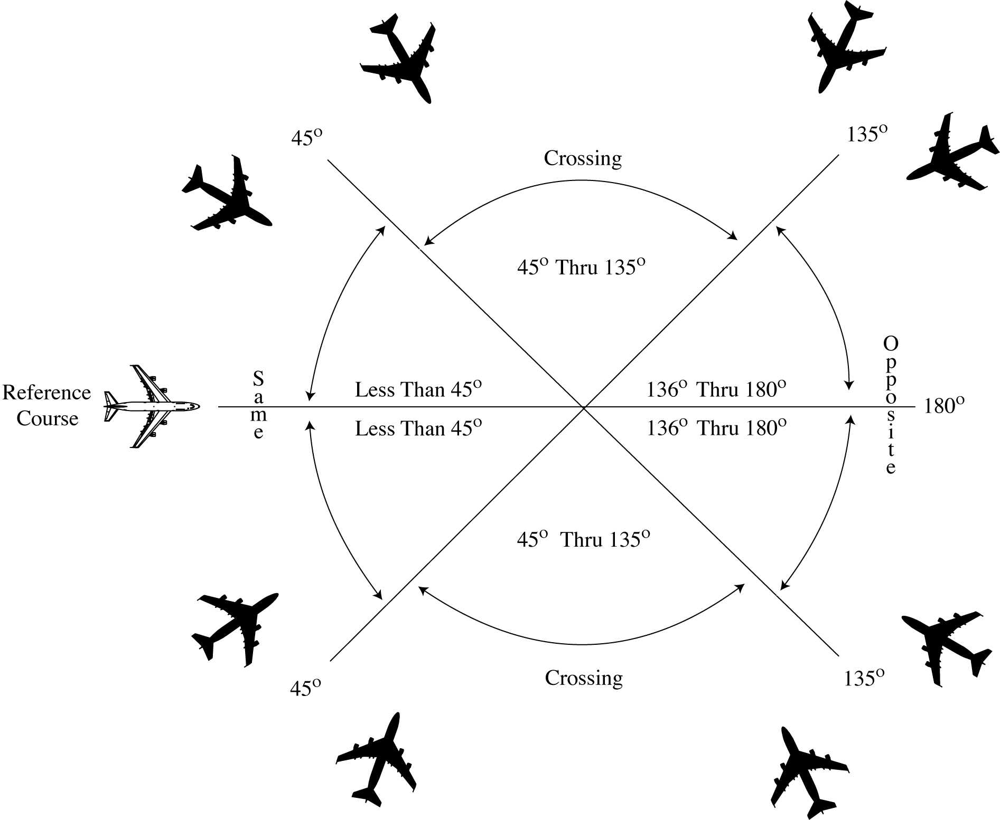

Chapter 1. General
Section 2. Terms of Reference
1-2-1. WORD MEANINGS
As used in this order:
- “Must” means a procedure is mandatory.
- “Must not” means a procedure is prohibited.
- “Should” means a procedure is recommended.
- “May” or “need not” means a procedure is optional.
- “Will” means futurity, not a requirement for the application of a procedure.
- Singular words include the plural.
- Plural words include the singular.
- “Aircraft” means the airframe, crew members, or both.
- “Approved separation” means separation in accordance with the applicable minima in this order.
- “Altitude” means indicated altitude mean sea level (MSL), flight level (FL), or both.
- “Miles” means nautical miles unless otherwise specified, and means statute miles in conjunction with visibility.
- “Course,” “bearing,” “azimuth,” “heading,” and “wind direction” information must always be magnetic unless specifically stated otherwise.
- “Time” when used for ATC operational activities, is the hour and the minute in Coordinated Universal Time (UTC). Change to the next minute is made at the minute plus 30 seconds, except time checks are given to the nearest quarter minute.
- “Runway” means the runway used by aircraft and, unless otherwise specified, does not include helipads and/or their accompanying takeoff/landing courses. (See Pilot/Controller Glossary terms – Runway and Helipad.)
- Flight operations in accordance with the options of “due regard” or “operational” have the following requirements:
- Obligates the authorized state aircraft commander to:
- Separate his/her aircraft from all other air traffic; and
- Assure that an appropriate monitoring agency assumes responsibility for search and rescue actions; and
- Operate under at least one of the following conditions:
- In visual meteorological conditions (VMC); or
- Within an area that is covered by an ATC surveillance source and in communications with ATC, or within surveillance source service volume and radio communications range of a facility, Department of Homeland Security or DoD unit capable of providing the pilot assistance to operate with due regard to other aircraft; or
- Be equipped with airborne radar that is sufficient to provide separation between his/her aircraft and any other aircraft he/she may be controlling and other aircraft; or
- Operate within Class G airspace.
- An understanding between the pilot and controller regarding the intent of the pilot and the status of the flight should be reached before the aircraft leaves ATC frequency.
- Obligates the authorized state aircraft commander to:
- “CFR” means Code of Federal Regulations.
FIG 1-2-1Divergence 
1-2-2. COURSE DEFINITIONS
The following definitions must be used in the application of the separation criteria in this order.
- SAME COURSES are courses whose protected airspaces are coincident, overlap, or intersect and whose angular difference is less than 45 degrees. (See FIG 1-2-1.)
- CROSSING COURSES are intersecting courses whose angular difference is 45 through 135 degrees inclusive. (See FIG 1-2-1.)
- OPPOSITE/RECIPROCAL COURSES are courses whose protected airspaces are coincident, overlap, or intersect and whose angular difference is greater than 135 degrees through 180 degrees inclusive. (See FIG 1-2-1.)
1-2-3. NOTES
Statements of fact, or of a prefatory or explanatory nature relating to directive material, are set forth as notes.
1-2-4. REFERENCES
As used in this order, references direct attention to an additional or supporting source of information such as FAA, NWS, and other agencies' orders, directives, notices, CFRs, and Advisory Circulars (ACs).
1-2-5. ANNOTATIONS
Revised, reprinted, or new pages are marked as follows:
- The change number and the effective date are printed on each revised or additional page.
- A page that does not require a change is reprinted in its original form.
- Bold vertical lines in the margin of changed pages indicate the location of substantive revisions to the order. Bold vertical lines adjacent to the title of a chapter, section, or paragraph means that extensive changes have been made to that chapter, section, or paragraph.
- Paragraphs/sections annotated with EN ROUTE, OCEANIC, or TERMINAL are only to be applied by the designated type facility. When they are not so designated, the paragraphs/sections apply to all types of facilities (en route, oceanic, and terminal).
- The annotation, USAF for the U.S. Air Force, USN for the U.S. Navy, and USA for the U.S. Army denotes that the procedure immediately following the annotation applies only to the designated service.
- WAKE TURBULENCE APPLICATION inserted within a paragraph means that the remaining information in the paragraph requires the application of wake turbulence procedures.
- The annotation PHRASEOLOGY denotes the prescribed words and/or phrases to be used in communications.
- The annotation EXAMPLE provides a sample of the way the prescribed phraseology associated with the preceding paragraph(s) will be used. If the preceding paragraph(s) does (do) not include specific prescribed phraseology, the EXAMPLE merely denotes suggested words and/or phrases that may be used in communications.
1-2-6. ABBREVIATIONS
As used in this order, the abbreviations listed below have the following meanings indicated. (See TBL 1-2-1.)
Abbreviation |
Meaning |
|---|---|
AAO |
Adverse Assumption Obstacle |
AAR |
Adapted arrival route |
AAR |
Airport arrival rate |
AC |
Advisory Circular |
ACC |
Area Control Center |
ACE-IDS |
ASOS Controller Equipment- Information Display System |
ACL |
Aircraft list |
ACLS |
Automatic Carrier Landing System |
ADAR |
Adapted departure arrival route |
ADC |
Aerospace Defense Command |
ADIZ |
Air Defense Identification Zone (to be pronounced “AY DIZ”) |
ADR |
Adapted departure route |
ADS |
Automatic Dependent Surveillance |
ADS-B |
Automatic Dependent Surveillance-Broadcast |
ADS-C |
Automatic Dependent Surveillance-Contract |
AFP |
Airspace Flow Program |
AIDC |
ATS Interfacility Data Communications |
AIM |
Aeronautical Information Manual |
AIRMET |
Airmen's meteorological information |
ALDARS |
Automated Lightning Detection and Reporting System |
ALERFA |
Alert phase code (Alerting Service) |
ALNOT |
Alert notice |
ALS |
Approach Light System |
ALTRV |
Altitude reservation |
AM |
Ambiguity-A disparity greater than a locally adapted distance exists between the position declared for a target by MEARTS and another facility's computer declared position during interfacility handoff |
AMASS |
Airport Movement Area Safety System |
AMB |
Ambiguity-A disparity greater than a locally adapted distance exists between the position declared for a target by STARS and another facility's computer declared position during interfacility handoff |
AMVER |
Automated Mutual Assistance Vessel Rescue System |
ANG |
Air National Guard |
APR |
ATC preferred route |
APREQ |
Approval Request |
ARAC |
Army Radar Approach Control facility (US Army) |
ARINC |
Aeronautical Radio Incorporated |
ARIP |
Air refueling initial point |
ARSR |
Air route surveillance radar |
ARTCC |
Air Route Traffic Control Center |
ASD |
Aircraft Situation Display |
ASDE |
Airport surface detection equipment |
ASDE-X |
Airport Surface Detection Equipment System - Model X |
ASF |
Airport Stream Filters |
ASOS |
Automated Surface Observing System |
ASR |
Airport surveillance radar |
ASSC |
Airport Surface Surveillance Capability |
ATC |
Air traffic control |
ATCAA |
ATC assigned airspace |
ATCSCC |
David J. Hurley Air Traffic Control System Command Center |
ATD |
Along-Track Distance |
ATIS |
Automatic Terminal Information Service |
ATO |
Air Traffic Organization |
ATO COO |
Air Traffic Organization Chief Operating Officer |
ATOP |
Advanced Technologies and Oceanic Procedures |
ATS |
Air Traffic Service |
AWOS |
Automated Weather Observing System |
BASE |
Cloud base |
CA |
Conflict Alert |
CAA |
Confirm assigned altitude |
CARCAH |
Chief, Aerial Reconnaissance Coordination, All Hurricanes |
CARF |
Central Altitude Reservation Function |
CAT |
Clear air turbulence |
CCF |
Combined Control Facility |
CDT |
Controlled departure time |
CEP |
Central East Pacific |
CFR |
Code of Federal Regulations |
CFR |
Call for Release |
CIC |
Controller-in-Charge |
CNS |
Continuous |
CPDLC |
Controller Pilot Data Link Communications |
CPME |
Calibration Performance Monitor Equipment |
CTA |
Control Area |
CTRD |
Certified Tower Radar Display |
CVFP |
Charted Visual Flight Procedure |
CWA |
Center Weather Advisory |
DCL |
Departure Clearance |
DETRESFA |
Distress Phase code (Alerting Service) |
DH |
Decision height |
DL |
Departure List |
DME |
Distance measuring equipment compatible with TACAN |
DOE |
Department of Energy |
DP |
Instrument Departure Procedure |
DR |
Dead reckoning |
DRT |
Diversion recovery tool |
DSR |
Display System Replacement |
DTAS |
Digital Terminal Automation Systems |
DTM |
Digital Terrain Map |
DVFR |
Defense Visual Flight Rules |
DVRSN |
Diversion |
EA |
Electronic Attack |
EAM |
Emergency Altitude Map |
EAS |
En Route Automation System |
EDCT |
Expect Departure Clearance Time |
EDST |
En Route Decision Support Tool |
EFC |
Expect further clearance |
EFVS |
Enhanced Flight Vision System |
ELDB |
Enhanced Limited Data Block |
ELP |
Emergency Landing Pattern |
ELT |
Emergency locator transmitter |
EoR |
Established on RNP |
EOVM |
Emergency obstruction video map |
EOS |
End Service |
ERAM |
En Route Automation Modernization |
ERIDS |
En Route Information Display System |
ERT |
Embedded route text |
ETA |
Estimated time of arrival |
FAA |
Federal Aviation Administration |
FANS |
Future Air Navigation System |
FDB |
Full Data Block |
FDIO |
Flight Data Input/Output |
FDP |
Flight data processing |
FICON |
Field Condition |
FIR |
Flight Information Region |
FL |
Flight level |
FLIP |
Flight Information Publication |
FLY |
Fly or flying |
FMS |
Flight Management System |
FSM |
Flight Schedule Monitor |
FSS |
Flight Service Station |
GCA |
Ground controlled approach |
GNSS |
Global Navigation Satellite System |
GPD |
Graphics Plan Display |
GPS |
Global Positioning System |
GS |
Ground stop |
HF/RO |
High Frequency/Radio Operator |
HIRL |
High intensity runway lights |
IAFDOF |
Inappropriate Altitude for Direction of Flight |
IC |
Initial contact |
ICAO |
International Civil Aviation Organization |
IDENT |
Aircraft identification |
IDS |
Information Display System |
IFR |
Instrument flight rules |
IFSS |
International Flight Service Station |
ILS |
Instrument Landing System |
INCERFA |
Uncertainty Phase code (Alerting Service) |
INREQ |
Information request |
INS |
Inertial Navigation System |
IR |
IFR military training route |
IRU |
Inertial Reference Unit |
ISR |
Increased Separation Required |
ITWS |
Integrated Terminal Weather System |
JATO |
Jet assisted takeoff |
LAHSO |
Land and Hold Short Operations |
LOA |
Letter of Agreement |
LLWAS |
Low Level Wind Shear Alert System |
LLWAS NE |
Low Level Wind Shear Alert System Network Expansion |
LLWAS-RS |
Low Level Wind Shear Alert System Relocation/Sustainment |
L/MF |
Low/medium frequency |
LORAN |
Long Range Navigation System |
Mach |
Mach number |
MALS |
Medium Intensity Approach Light System |
MALSR |
Medium Approach Light System with runway alignment indicator lights |
MAP |
Missed approach point |
MARSA |
Military authority assumes responsibility for separation of aircraft |
MCA |
Minimum crossing altitude |
MCI |
Mode C Intruder |
MDA |
Minimum descent altitude |
MDM |
Main display monitor |
MEA |
Minimum en route (IFR) altitude |
MEARTS |
Micro En Route Automated Radar Tracking System |
METAR |
Aviation Routine Weather Report |
MIA |
Minimum IFR altitude |
MIAWS |
Medium Intensity Airport Weather System |
MIRL |
Medium intensity runway lights |
MNPS |
Minimum Navigation Performance Specification |
MNT |
Mach Number Technique |
MOA |
Military operations area |
MOCA |
Minimum obstruction clearance altitude |
MRA |
Minimum reception altitude |
MSAW |
Minimum Safe Altitude Warning |
MSL |
Mean sea level |
MTI |
Moving target indicator |
MTR |
Military training route |
MVA |
Minimum vectoring altitude |
NADIN |
National Airspace Data Interchange Network |
NAR |
National Automation Request |
NAS |
National Airspace System |
NAT |
ICAO North Atlantic Region |
NAT HLA |
North Atlantic High Level Airspace |
NBCAP |
National Beacon Code Allocation Plan |
NDB |
Nondirectional radio beacon |
NHOP |
National Hurricane Operations Plan |
NM |
Nautical mile |
NOAA |
National Oceanic and Atmospheric Administration |
NOPAC |
North Pacific |
NORAD |
North American Aerospace Defense Command |
NOS |
National Ocean Service |
NOTAM |
Notice to Airmen |
NOWGT |
No weight. The weight class or wake category has not been determined |
NRP |
North American Route Program |
NRR |
Nonrestrictive Route |
NRS |
Navigation Reference System |
NTZ |
No transgression zone |
NWS |
National Weather Service |
NWSOP |
National Winter Season Operations Plan |
ODALS |
Omnidirectional Approach Lighting System |
ODP |
Obstacle Departure Procedure |
OID |
Operator Interface Device |
OMIC |
Operations Manager‐in‐Charge |
OS |
Operations Supervisor |
OTR |
Oceanic transition route |
PAPI |
Precision Approach Path Indicators |
PAR |
Precision approach radar |
PBCT |
Proposed boundary crossing time |
P/CG |
Pilot/Controller Glossary |
PDC |
Pre‐Departure Clearance |
PID |
Pilot initiated downlink |
PIREP |
Pilot Weather Report |
PPI |
Plan position indicator |
PTP |
Point‐to‐point |
PVD |
Plan view display |
RA |
Radar Associate |
RAIL |
Runway alignment indicator lights |
RAPCON |
Radar Approach Control facility (USAF, USN, and USMC) |
RATCF |
Radar Air Traffic Control Facility (USN and USMC) |
RBS |
Radar bomb scoring |
RCC |
Rescue Coordination Center |
RCLS |
Runway Centerline System |
RCR |
Runway condition reading |
RE |
Recent (used to qualify weather phenomena such as rain, e.g., recent rain = RERA) |
REIL |
Runway end identifier lights |
RF |
Radius-to-Fix |
RNAV |
Area navigation |
RNP |
Required Navigation Performance |
RTQC |
Real-Time Quality Control |
RVR |
Runway visual range |
RVSM |
Reduced Vertical Separation Minimum |
RwyCC |
Runway Condition Codes |
RwyCR |
Runway Condition Report |
SAA |
Special Activity Airspace |
SAR |
Search and rescue |
SATCOM |
Satellite Communication |
SDP |
Surveillance Data Processing |
SELCAL |
Selective Calling System |
SFA |
Single frequency approach |
SFO |
Simulated flameout |
SID |
Standard Instrument Departure |
SIGMET |
Significant meteorological information |
SPA |
Special Posting Area |
SPECI |
Nonroutine (Special) Aviation Weather Report |
STAR |
Standard terminal arrival |
STARS |
Standard Terminal Automation Replacement System |
STMC |
Supervisory Traffic Management Coordinator |
STMCIC |
Supervisory Traffic Management Coordinator‐in‐charge |
STOL |
Short takeoff and landing |
SURPIC |
Surface Picture |
SVFR |
Special Visual Flight Rules |
TAA |
Terminal arrival area |
TAC |
Trajectory altering clearance |
TAS |
Terminal Automation Systems |
TACAN |
TACAN UHF navigational aid (omnidirectional course and distance information) |
TAWS |
Terrain Awareness Warning System |
TCAS |
Traffic Alert and Collision Avoidance System |
TCDD |
Tower cab digital display |
TDLS |
Terminal Data Link System |
TDW |
Tower display workstation |
TDWR |
Terminal Doppler Weather Radar |
TDZL |
Touchdown Zone Light System |
TF |
Track‐to‐Fix |
TFMS |
Traffic Flow Management System |
TMC |
Traffic Management Coordinator |
TMU |
Traffic Management Unit |
TO |
Technical Operations |
TOC |
Transfer of communication |
TRACON |
Terminal Radar Approach Control |
TRSA |
Terminal radar service area |
UAP |
Unidentified anomalous phenomena |
UHF |
Ultra high frequency |
USA |
United States Army |
USAF |
United States Air Force |
USN |
United States Navy |
UTC |
Coordinated universal time |
UTM |
Unsuccessful transmission message |
UUA |
Urgent pilot weather report |
VCI |
Voice Communication Indicator |
VFR |
Visual flight rules |
VHF |
Very high frequency |
VMC |
Visual meteorological conditions |
VNAV |
Vertical Navigation |
VOR |
VHF navigational aid (omnidirectional course information) |
VOR/DME |
Collocated VOR and DME navigational aids (VHF course and UHF distance information) |
VORTAC |
Collocated VOR and TACAN navigation aids (VHF and UHF course and UHF distance information) |
VR |
VFR military training route |
VSCS |
Voice Switching and Control System |
WAAS |
Wide Area Augmentation System |
WATRS |
West Atlantic Route System |
WRA |
Weather Reconnaissance Area |
WSO |
Weather Service Office |
WSP |
Weather System Processor |
WST |
Convective SIGMET |